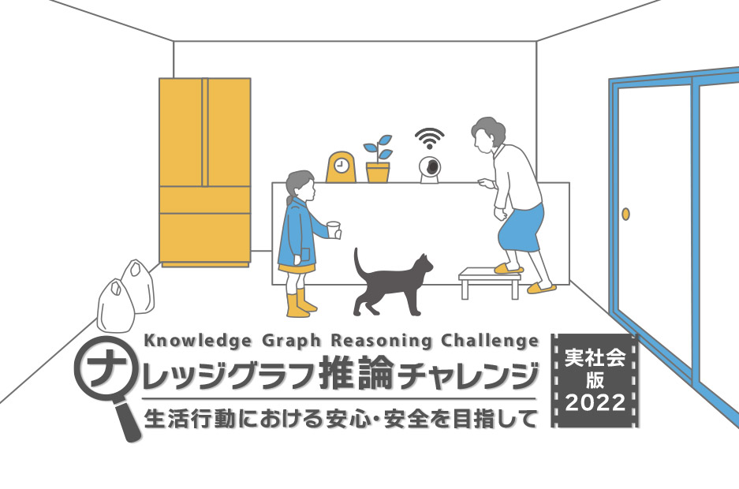
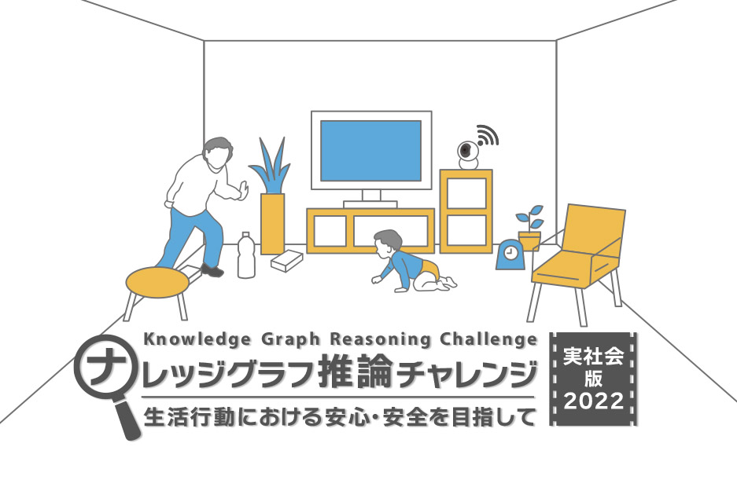

- 
- 
-

NEWS
- 2023/5/24
- Awarding results are now available.
- 2023/4/20
- SPARQL Endpoint is now SSL-enabled.
- 2023/4/10
- Information on the entries is now available.
- 2023/3/31
- Knowledge Graph Reasoning Challenge for Social Issues Final presentation and judging will be held on March 31 at 3:00 p.m.
- 2023/2/21
- Updated data set.
- 2023/2/17
- Videoa> of Knowledge Graph Reasoning Challenge for Social Issues The 2nd Technical Study Session is now available.
- 2023/2/10
- Knowledge Graph Reasoning Challenge for Social Issues The 2nd Technical Study Sessionのmaterialsare available.
- 2023/1/20
- The final judging and awards ceremony will be held on March 31 at 3:00 p.m.
- 2023/1/19
- The deadline for applications is midnight on March 18.
- 2023/1/19
- Knowledge Graph Reasoning Challenge for Social Issues The second technical study session will be held on February 10 at 3:00 p.m.
- 2023/1/11
- Knowledge Graph Reasoning Challenge for Social Issues The technical study session materials are now available.
- 2022/12/28
- Added significantly to the data sets offered in the Challenge.
- 2022/12/27
- Materials related to application documents are now available.
- 2022/12/22
- Knowledge Graph Reasoning Challenge for Social Issues The technical study sessionのVideosare now available.
- 2022/11/07
- Our presentation on our efforts received the 2022 National Conference on Artificial Intelligence Excellence Award. We would like to sincerely thank everyone involved in the Knowledge Graph Reasoning Challenge so far.
- 2022/10/18
- [The 59th AI Seminar] "The Latest Trends in Knowledge Graphs for Industrial Applications of Artificial Intelligence" will feature a presentation on the Knowledge Graph Inference Challenge.
- 2022/10/17
- Six new data sets (videos and knowledge graphs) provided by the Challenge were added, and descriptions of the data set were added.
- 2022/09/09
- Ten new data (videos and knowledge graphs) provided by the Challenge have been added.
- 2022/08/18
- This year's website is now available. This year's challenge is called "Knowledge Graph Reasoning Challenge for Social Issues 2022 〜The challenge will be held under the name "Toward Safety and Security in Daily Activities" using more practical data and challenges. For details, please see the application guidelines.
Outline of the event
With the recent increase in interest in artificial intelligence (AI) technology, triggered by Deep
Learning, it is expected that AI technology will become widespread and embedded in various social
systems.
In this context, for AI technology to be used safely and securely in society, it is essential to
have AI technology that can explain the reasons why the system reached its decisions (with
interpretability) in order to verify that the system is operating correctly and to guarantee its
quality.
Against this background, the Semantic Web and Ontology Research Group of the Japanese Society for
Artificial Intelligence has held the Knowledge Graph Reasoning Challenge since 2018, a contest aimed
at sharing awareness and developing and promoting necessary technologies for reasoning (estimation)
using artificial intelligence techniques.
Based on the experience and knowledge gained from holding the Knowledge Graph Reasoning Challenge to
date, we have decided to hold a more practical contest on the subject of safety for the elderly, the
"Knowledge Graph Reasoning Challenge for Social
Issues," a more practical challenge on the subject of safety for the elderly.
Motivation: According to a 2010-2012 survey, 77.1% of accidents involving people aged 65 and older occurred in "residences," making the maintenance of life safety in the home an important social issue. By setting the issue in a concrete and familiar setting, namely, in the homes of the elderly, We believe that by setting the issue in the home of the elderly, we can attract the interest of a larger number of people. The "Knowledge Graph Reasoning Challenge for Social Issues The "Knowledge Graph Reasoning Challenge for Social Issues" provides a standardized dataset of knowledge graphs and videos, which will be used in the future to develop safety technologies not only for the elderly, but also for children, factory workers, traffic safety, and other target audiences. It can also serve as a platform for applying safety technologies to a wide range of subjects, including children, factory workers, traffic safety, etc., as well as the elderly. Detecting accident risks with concrete explanations and showing safer alternatives could in the future be embodied in the form of cyber-physical systems, AI speakers, AR systems, etc., which will be a useful tool for occupants, home designers, and professionals in safety engineering, etc.
Schedule
2022/09/05 Challenge applications now open
Announced the start of the challenge at a meeting of the Robotics Society of Japan！
↓
Each participant is expected to tackle the challenge on his/her own
↓
2023/3/18 0:00 Challenge Application Deadline
↓
2023/3/31 15:00-18:00 (Online) Final Presentation and Awards Ceremony
Related Link

This paper is based on results obtained from a project, JPNP20006 and JPNP180013, commissioned by the New Energy and Industrial Technology Development Organization (NEDO). And supported by JSPS Grant for Scientific Research 19H04168

お問合せ
kgrc@knowledge-graph.jp
Special Event Committee Member, Semantic Web and Ontology Special Interest Group, Japanese Society
for Artificial Intelligence